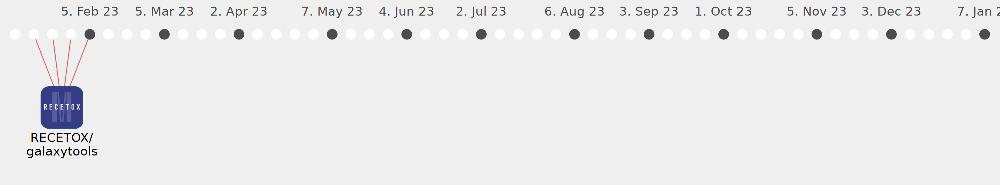

Galaxy Community Activities
maximskorik
maximskorik
https://github.com/maximskorik
Commits all-time:
228
Commits last year:
36

RECETOX/galaxytools
(36)
0ad2861
2dc68fa
af71a59
643e3da
25cbe7a
5b70883
0d73714
8b01f6b
e292597
ceb7dda
81712c2
eb2e833
7e532b0
8abd51c
ce7f12b
4e6d752
2178a0a
fc7755a
5375212
66f7909
a806bff
da95fd1
31a966d
4b05338
d5848d1
4080935
c862a80
58d6014
9a1cb46
67f8b5f
37fb64d
53bf708
27af4f2
bb736bb
2ce1fe1
9e74175